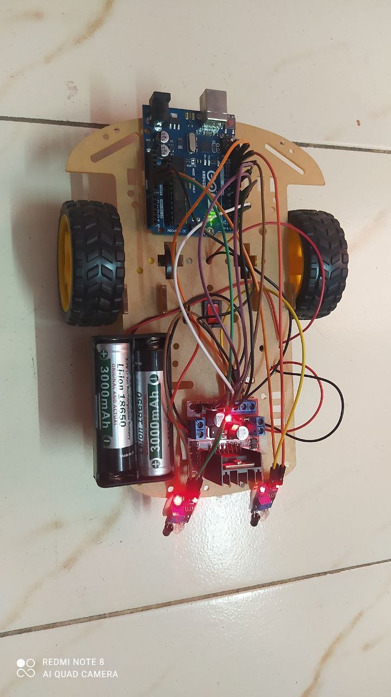
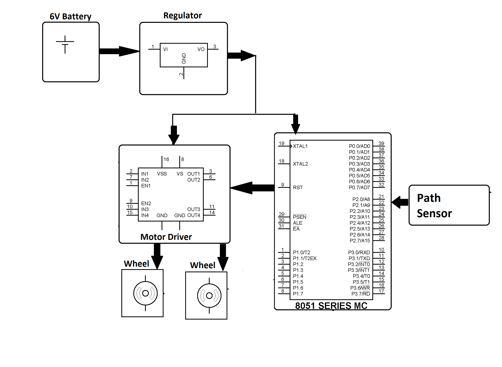
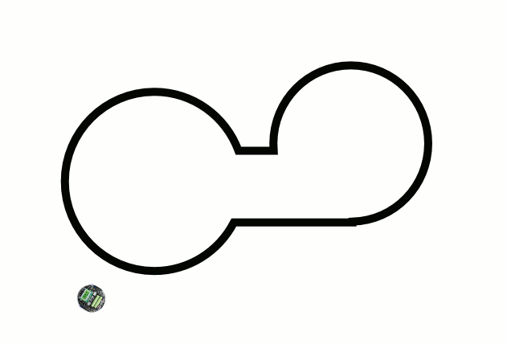
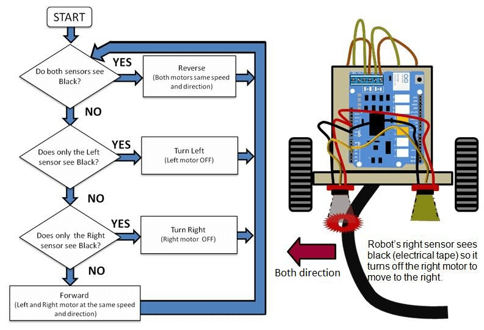

Project Images & Videos
Project Images
Here you can showcase photographs of your AGV prototype, circuit boards, testing environments, and any other relevant visuals. Replace the placeholder images with your actual project photos.

Our Line Follower AGV prototype.

A block diagram of the circuit board.

Simulation of an AGV navigating a test track.

A Flowchart of working of the line follower.